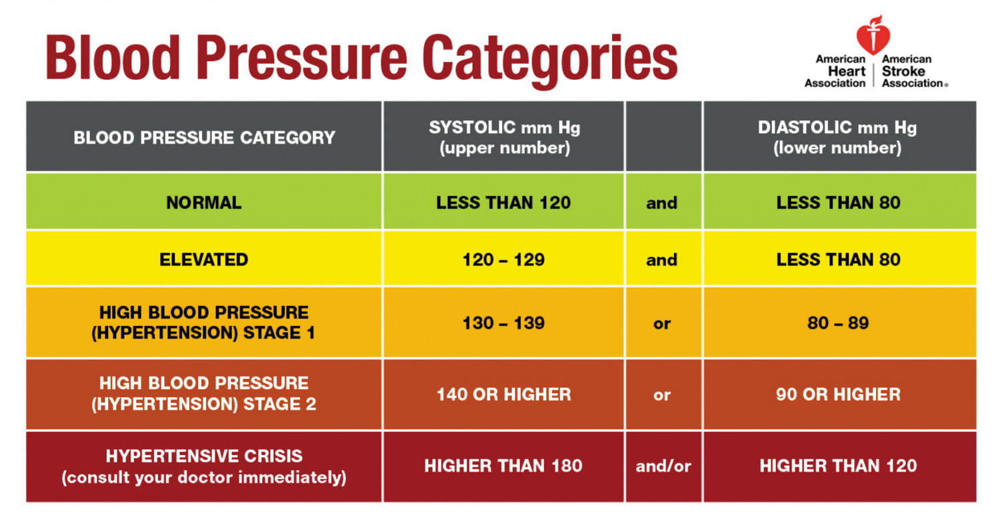

Explore the world of exercise and discover the key to a healthier, more energetic lifestyle. From cardio workouts to strength training, we've got your fitness journey covered.
Learn how regular exercise can transform your well-being. Our expert guides and workout routines make it easy to get started and stay motivated on the path to a healthier you.
Explora el mundo del ejercicio y descubre la clave para un estilo de vida más saludable y lleno de energía. Desde ejercicios de cardio hasta entrenamiento de fuerza, cubrimos tu viaje de fitness.
Descubra cómo el ejercicio regular puede transformar su bienestar. Nuestras guías expertas y rutinas de ejercicios hacen que sea fácil comenzar y mantenerse motivado en el camino hacia una vida más saludable.
Diet Tracking
Seguimiento de Dieta
Unlock the power of mindful eating with our diet tracking tools. Monitor your nutrition, set dietary goals, and make informed choices to achieve your health and wellness objectives.
Whether you're looking to lose weight, gain muscle, or maintain a balanced diet, our platform simplifies the process. Start your journey to a healthier you today.
Libere el poder de una alimentación consciente con nuestras herramientas de seguimiento de la dieta. Controle su nutrición, establezca objetivos dietéticos y tome decisiones informadas para lograr sus objetivos de salud y bienestar.
Ya sea que esté buscando perder peso, ganar músculo o mantener una dieta equilibrada, nuestra plataforma simplifica el proceso. Comience su viaje hacia una vida más saludable hoy.
Breathing Techniques
Técnicas de respiración
Discover the transformative power of conscious breathing. Breathing techniques are your gateway to enhanced well-being and stress reduction.
Whether you're seeking relaxation, improved focus, or emotional balance, our comprehensive guides cover various breathwork methods, from deep breathing to mindfulness practices. Start your journey to a more centered and mindful you today.
Descubre el poder transformador de la respiración consciente. Las técnicas de respiración son la puerta de entrada a un mayor bienestar y a la reducción del estrés.
Ya sea que busque relajación, mejor concentración o equilibrio emocional, nuestras guías completas cubren varios métodos de respiración, desde respiración profunda hasta prácticas de atención plena. Comience hoy su viaje hacia una persona más centrada y consciente.
Blood Pressure Calculator
Calculadora de presión arterial

Blood Pressure plays a vital role in your well-being. Maintaining stable blood pressure levels is key to feeling your best.
Learn how regular exercise can transform your well-being. Our expert guides and workout routines make it easy to get started and stay motivated on the path to a healthier you.
La presión arterial juega un papel vital en su bienestar. Mantener niveles estables de presión arterial es clave para sentirse mejor.
Mantenga el control de su salud obteniendo información instantánea sobre sus niveles de presión arterial y tomando decisiones informadas sobre su dieta y estilo de vida. Vea cómo se utilizan las presiones sistólica y diastólica para calcular la presión arterial.
Water Intake
Consumo de agua
Introducing our Water Intake Calculator: Your handy companion for staying hydrated and healthy. With this intuitive tool, simply input your details to determine your recommended daily water intake.
Stay on track with your hydration goals by receiving personalized recommendations based on factors like weight, activity level, and climate. Effortlessly monitor and optimize your water intake to ensure your body receives the hydration it needs. Make staying hydrated easier with our user-friendly Water Intake Calculator.
Presentamos nuestra Calculadora de consumo de agua: su práctico compañero para mantenerse hidratado y saludable. Con esta herramienta intuitiva, simplemente ingrese sus datos para determinar su ingesta diaria de agua recomendada.
Manténgase al día con sus objetivos de hidratación recibiendo recomendaciones personalizadas basadas en factores como el peso, el nivel de actividad y el clima. Controle y optimice sin esfuerzo su consumo de agua para garantizar que su cuerpo reciba la hidratación que necesita. Haga que mantenerse hidratado sea más fácil con nuestra Calculadora de ingesta de agua fácil de usar.